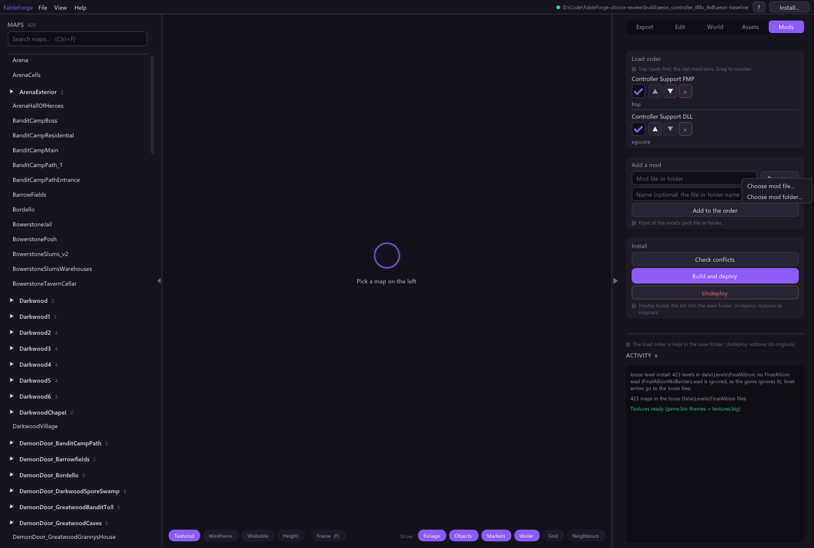
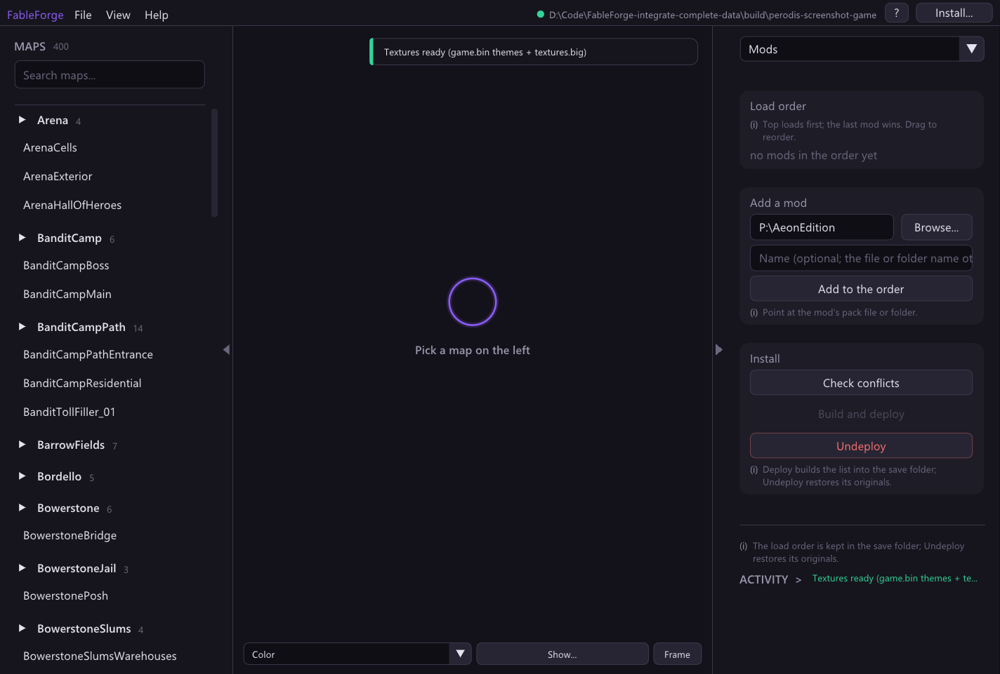
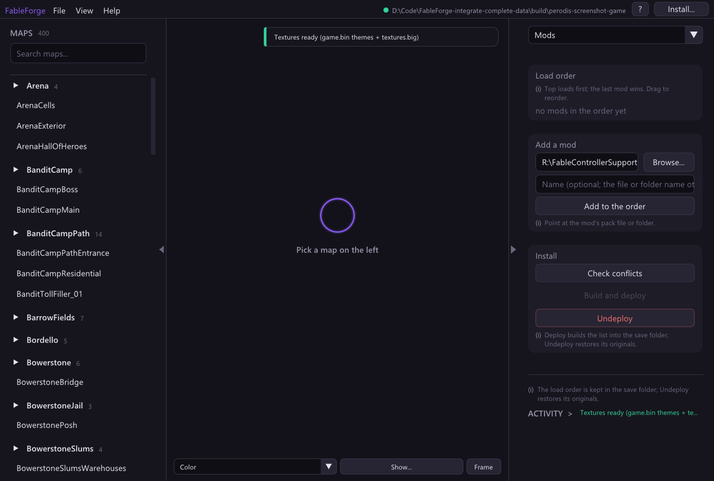
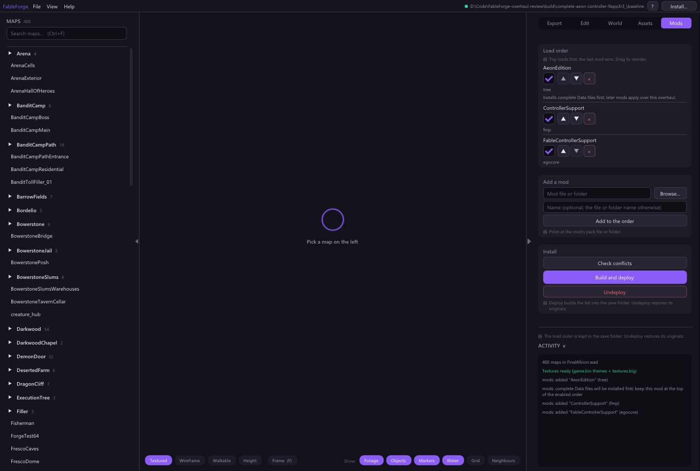
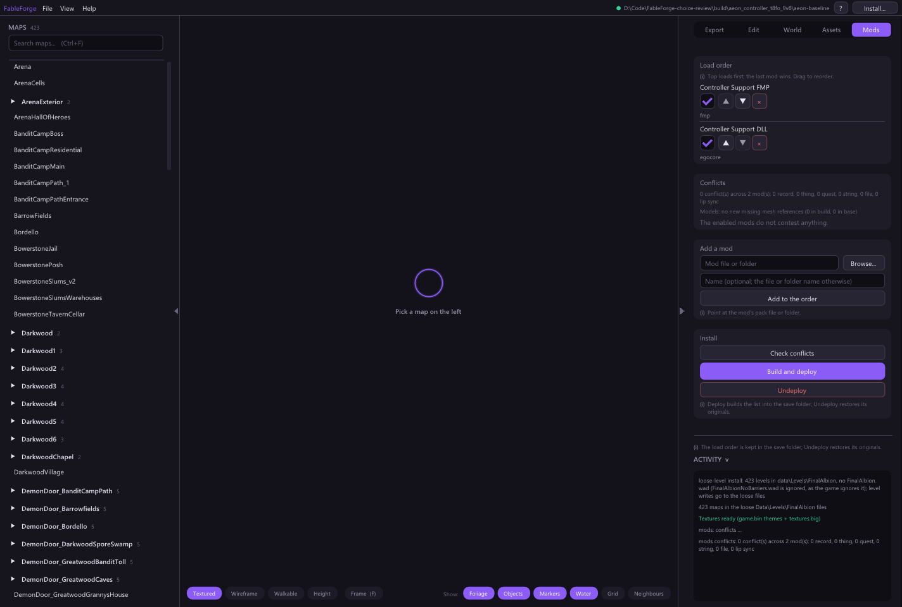
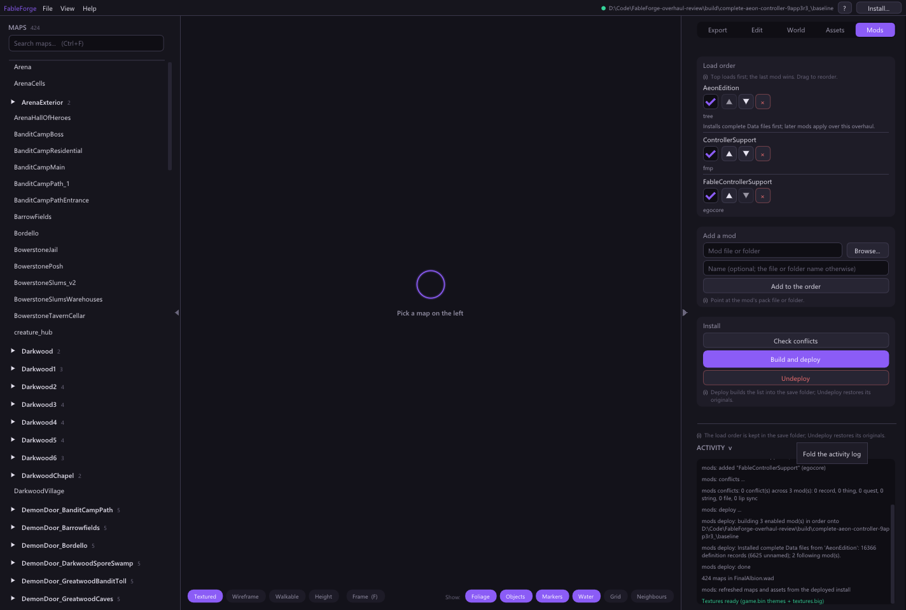

FABLEFORGE · A GUIDE FOR PERODIS
Aeon Edition + Controller Support
Forge installs all three sources. Give it the extracted Aeon Edition folder, the controller FMP and the controller runtime folder. Forge prepares the complete overhaul, applies the controller changes and deploys the result.
This route uses Forge for the game-data installation and EgoCore to load the controller DLL during play. Chocolate Box, Fable Explorer and a separate FreeRoam step are unnecessary for this checked route.
Use FableForge 0.18.1-rc.1 with this guide. The old 0.18.0-rc.3 application predates these installer corrections. File preservation checks have passed; gameplay, Android, Winlator and GameNative remain untested.
1Choose the game copy to prepare
Start with a clean copy of Fable: The Lost Chapters (2005) and keep your saves backed up. Forge will install the mods into the game folder you choose in step 3.
Keep the downloaded mod sources outside that game folder so Forge can rebuild and remove the installation later.
2Extract and identify three sources
Download Aeon Edition and Controller Support's legacy FMP and runtime downloads. Extract them outside the game folder. The offline checks used Aeon 5.03 and Controller Support version 1.
Aeon Edition
AeonEdition/Data/The Aeon 5.03 ZIP puts Bones, CompiledDefs, graphics, lang and Levels at the top level; it does not include a Data folder. Put those five folders inside a new Data folder under AeonEdition. Choose AeonEdition in Forge.
Controller game data
ControllerSupport.fmpChoose this file from the legacy FMP download. Forge resolves its supported named references against the installed overhaul.
Controller runtime
Mods/FableControllerSupport/Choose the extracted runtime folder containing FableControllerSupport.dll. Keep the original download intact, including its Data folder if supplied.
Arrange Aeon before opening Forge: in the extracted AeonEdition folder, create a folder named Data. Move the five Aeon game-data folders into it. The result must include AeonEdition/Data/CompiledDefs/game.bin, AeonEdition/Data/graphics/graphics.big and AeonEdition/Data/Levels. Leave Guide, readme.txt and the changelog outside Data; a deleted Guide is fine. Do not use Steam's Data folder for this preparation.
AeonEdition/
Data/
Bones/
CompiledDefs/
game.bin
graphics/
lang/
Levels/
Guide/ (optional)
readme.txt
These are paths you select in Forge. After extraction, continue to steps 3 and 4 to add them. Forge handles copying them into the selected game installation.
When the controller FMP is present, Forge installs the controller runtime DLL without its alternate Data overrides. That prevents the runtime package from overwriting the relinked FMP result. The original downloaded folder stays unchanged.
3Select the game folder in Forge
Download and extract the complete FableForge 0.18.1-rc.1 application ZIP, then open FableForge.exe. Keep its companion files together. The guide-only ZIP does not contain the application.
In Setup → Choose the install folder…, select the game folder containing Fable.exe. For Steam, this is the Fable The Lost Chapters folder. Close Fable and EgoCore while Forge writes files, then open Mods.
4Add all three sources
Under Add a mod, click Browse…. The menu has separate choices for a file and a folder:

The Browse menu in Forge. The following three screenshots show the selected path in Add a mod before pressing Add to the order. The P:, Q: and R: drives are short temporary paths on our Windows PC; use your own extracted folders and file.
- Aeon Edition: choose Choose mod folder…, open the prepared Aeon Edition folder, and select that folder. It must directly contain the new
Data folder with CompiledDefs, graphics, Levels, lang and Bones inside. Do not select your Steam game folder. When its path appears, click Add to the order and wait for Forge to finish reading it. Aeon is large, so this can take several minutes.

Aeon's extracted parent folder is selected. Its Data folder is inside it.
- Controller game data: click Browse… → Choose mod file…, select
ControllerSupport.fmp, then click Add to the order.
Select the FMP file itself.
- Controller runtime: click Browse… → Choose mod folder…, select the extracted
FableControllerSupport folder containing FableControllerSupport.dll, then click Add to the order.

Select the folder containing the DLL, not the DLL file.
You should now see three enabled entries, in this order: Aeon Edition, Controller Support FMP, Controller runtime.
Forge marks Aeon as a complete Data installation. Keep it first; the controller layers apply over it. Keep all source files available for future rebuilds.

The three sources on a disposable game copy. Your paths will differ.
5Check and deploy
Click Check conflicts and wait. Review the report and Activity. Then click Build and deploy and wait for mods deploy: done. An error means the operation has failed; keep the existing working copy and resolve the reported issue.
The report explains that Forge installs the complete overhaul first and uses the FMP for controller game data. If the complete source is missing compiled banks, restore the extracted files. If another overhaul needs unsupported definition merging, Forge refuses it rather than silently dropping its components.

Review the installation plan before deploying.
Forge installs Aeon's complete Data files, rebuilds packed levels where needed, applies the controller definitions, copies Mods/FableControllerSupport/FableControllerSupport.dll and enables it in Mods.ini. Undeploy restores the game files that existed before this deployment. To remove a source, remove its order entry and deploy again.

The three-source scratch deployment is checked against the independent CLI build.
6Load the DLL through EgoCore
Set up EgoCore using the controller author's instructions for this game copy. Forge does not supply or replace the runtime loader.
Enable Controller Support in EgoCore and launch through it. Following Aeon's supplied advice, skip an EgoCore offer to decompile the WAD. Forge has already prepared the game data and installed the controller folder with only its runtime DLL.
Test loading and target lock on the PC before transferring to Android. A successful file build is not a successful game launch.
7Transfer the complete prepared copy
Copy the complete game folder, including Mods, Mods.ini and EgoCore runtime files, to a separate location in the Android Windows environment you use. Keep the known working PC copy. Use the same runtime-loading route.
If it crashes, compare separate copies of the unmodified game, Aeon alone and Aeon with the controller. Record the exact crash point, executable version, Windows environment/version and available loader or crash logs.
Offline preservation checks: Forge's original three-source route preserves all 16,362 existing Aeon records outside the five intended FMP imports, including all 6,625 unnamed entries. All 14 supported controller references resolve. The test checks 942 other source files, all 843 authored level payloads in the rebuilt WAD, the unchanged DLL and unchanged source inventories. Small packed and loose fixtures also check deployment and exact undeployment.
Updated 4 October 2026. The screenshots show real Forge picker selections and the three-source GUI run on disposable game copies. The original author Discord reports drive these installer regression checks. Third-party game/mod files are not included. No gameplay or Android test was performed.